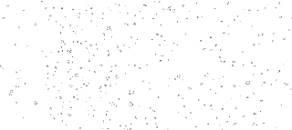

Proyectos Scarleth Osorio
Bienvenidos a mi pagina web hecha con p5.js y vs code a lo largo de mi semestre en Imagen Escrita
Aqui es donde veran mis proyectos que he hecho en estos meses desde ciclo for, espiral, recursion, atraccion y mi proyecto final.
Disfruten :)
algunas de las practicas no animadas


Ciclo For
-
Ejercicio 1
-
Ejercicio 2
-
Ejercicio 3
- Ejercicio 4
Espiral
-
Espiral
Recursión
-
Interactivo
Atraccion
-
Simple
-
Interactivo
Particles
-
Normales
-
Estrellas
Practicas que no son Tareas
-
Movimiento
-
Tipo de practile
-
Pizarra de mandalas
-
Remolino Colorido Interactivo
proyecto final
Les dejare mi proyecto final aqui y me ire despacio hacia atras :)
 Aqui yace mi esfuerzo :)
Y aqui una variante :)
Aqui yace mi esfuerzo :)
Y aqui una variante :)
Si quieres ver la pagina que hice respecto a ¿porque los gatos mueven la cola? acá.
